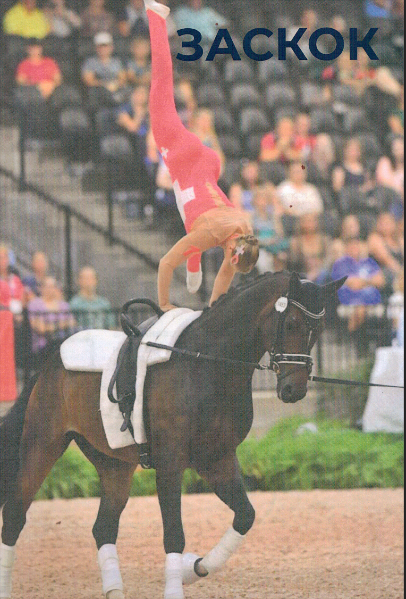
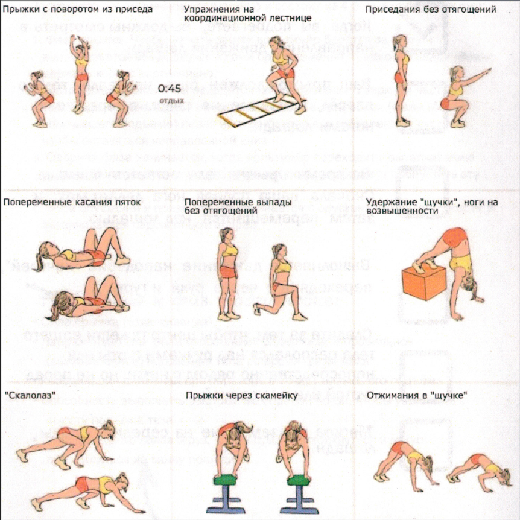
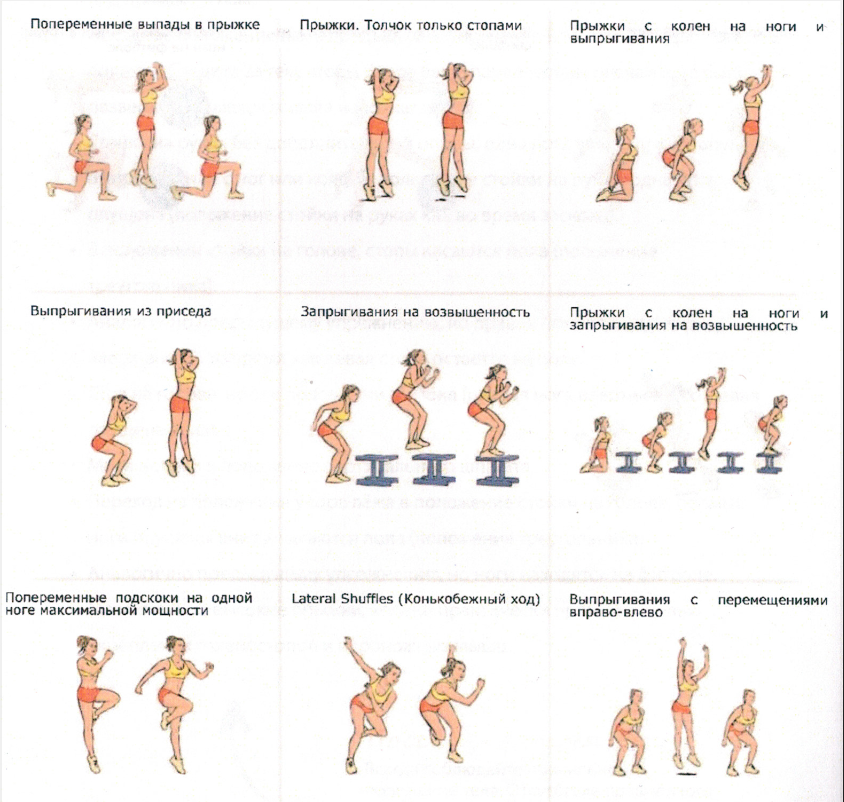
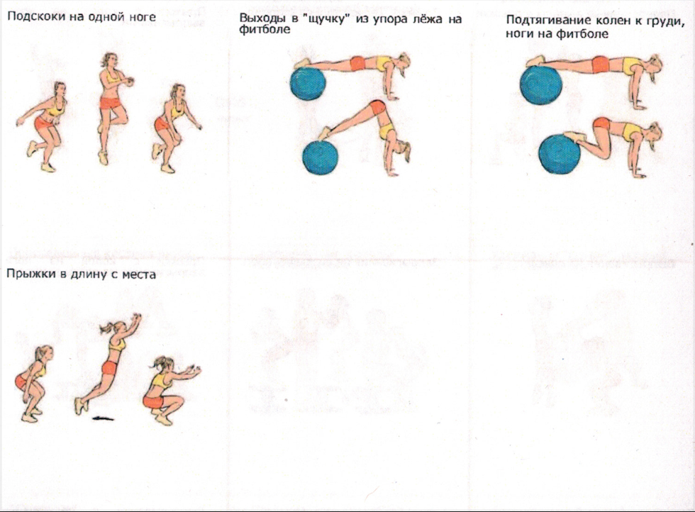

Нажмите на фото, чтобы увеличить
Вы можете использовать список выше для контроля подготовки вольтижёров. Нужно ли что-либо из этого списка улучшить?
Чтобы начать заскок, вольтижёр берётся за гурту и выталкивается вверх двумя ногами одновременно, близко к лошади. Важно держать корпус вертикально.
Правая нога находится на одной линии с верхней частью туловища и поднимается как можно выше. На пути вверх левая нога сгибается в тазобедренном суставе, чтобы оставаться направленной вниз.
Начинается, когда вольтижёр переходит к выталкиванию руками. Вольтижёры начального уровня подготовки могут пропустить эту фазу.
Начинается с опусканием центра тяжести и заканчивается седом лицом вперёд.


